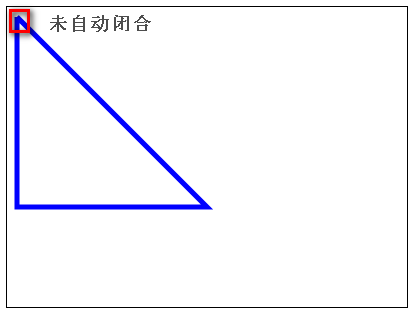
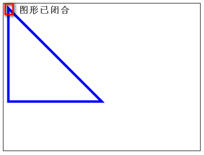
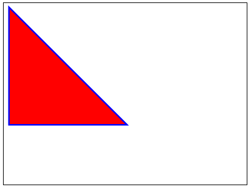

html5之canvas api基础
更新日期:
概述
html5的canvas元素(画布)用于在网页实时生成图像，并且可以操作图像内容。canvas元素本身没有绘图能力，所有绘图工作必须由javascript完成。基本上它是一个可以用JavaScript操作的位图(bitmap),你可以控制canvas画布上的每一个像素。canvas拥有多种绘制路径、矩形、圆形、字符以及添加图像的方法。
创建canvas元素
使用canvas前，首先需要新建一个canvas网页元素。
<canvas id="myCanvas" width="400" height="200">
您的浏览器不支持canvas！
</canvas>
上面代码中，定义了canvas的id，宽度和高度。注意canvas的width和height属性值后面不需要跟”px”，而且最好不要在canvas元素的style中设置width和height的样式。如果浏览器不支持这个API，则就会显示canvas标签中间的文字——“您的浏览器不支持canvas！”。
每个canvas元素都有一个对应的context对象（上下文对象），canvas api定义在这个context对象上面，所以需要获取这个对象，方法是使用getContext方法。
var canvas = document.getElementById('myCanvas');
if (canvas.getContext) {
var ctx = canvas.getContext('2d');
}
上面代码中，canvas.getContext表达式用于判断浏览器是否支持canvas api。getContext方法指定参数2d，表示该canvas对象用于生成2D图案（即平面图案）。如果参数是3d，就表示用于生成3D图像（即立体图案），这部分实际上单独叫做WebGL API。
绘图方法
canvas画布提供了一个用来作图的平面空间，该空间的每个点都有自己的坐标，x表示横坐标，y表示竖坐标。原点(0, 0)位于图像左上角，x轴的正向是原点向右，y轴的正向是原点向下。
绘制路径
beginPath方法表示开始绘制路径，moveTo(x, y)方法设置线段的起点，lineTo(x, y)方法设置线段的终点，stroke方法用来给透明的线段着色。
ctx.beginPath(); // 开始路径绘制
ctx.moveTo(10, 10); // 设置路径起点，坐标为(10,10)
ctx.lineTo(200, 200); // 绘制一条到(200,200)的直线
ctx.lineTo(10,200); // 绘制从(200,200)到(10,200)的直线
ctx.lineTo(10,10); // 绘制从(10,200)到(10,10)回到起点的直线
ctx.closePath(); // 自动闭合，形成封闭的图形
ctx.lineWidth = 5.0; // 设置线宽
ctx.strokeStyle = "#CC0000"; // 设置线的颜色
ctx.stroke(); // 进行线的着色，这时整条线才变得可见
moveto和lineto方法可以多次使用。最后，还可以使用closePath方法，自动绘制一条当前点到起点的直线，形成一个封闭图形，省却使用一次lineto方法。stroke方法最后必须被调用，否则绘制的路径是不可见的。
注意： 当我们不使用closePath方法的时候，绘制的图形是不闭合的。

只有调用closePath方法，图形会才闭合。

绘制填充的路径
通过调用fill方法，可以填充绘制的路径。注意： 填充时并不需要路径是闭合的。
使用方法如下：
ctx.fillStyle = "#ff0000"; // 设置填充的颜色
ctx.fill(); // 对绘制的路径进行填充
效果如下：

绘制矩形
fillRect(x, y, width, height)方法用来绘制矩形，它的四个参数分别为矩形左上角顶点的x坐标、y坐标，以及矩形的宽和高。fillStyle属性用来设置矩形的填充色。
ctx.fillStyle = "#0000ff"; // 设置填充的颜色
ctx.fillRect(50,50,100,100); // 绘制填充的矩形
strokeRect方法与fillRect类似，用来绘制空心矩形。
ctx.strokeStyle = "#0000ff"; // 设置矩形边框的颜色
ctx.strokeRect(50,50,100,100); //绘制无填充的矩形
clearRect方法用来清除某个矩形区域的内容。
ctx.clearRect(50,50,100,100); // 清除坐标范围内的矩形区域内的所有图形
绘制文本
fillText(string, x, y) 用来绘制文本，它的三个参数分别为文本内容、起点的x坐标、y坐标。使用之前，需用font设置字体、大小、样式（写法类似与CSS的font属性）。与此类似的还有strokeText方法，用来添加空心字。
ctx.font = "Bold 20px Arial"; // 设置字体
ctx.textAlign = "left"; // 设置对齐方式
ctx.fillStyle = "#008600"; // 设置填充颜色
ctx.fillText("Hello!", 10, 50); // 设置字体内容，以及在画布上的位置
ctx.strokeText("Hello!", 10, 100); // 绘制空心字
fillText方法不支持文本断行，即所有文本出现在一行内。所以，如果要生成多行文本，只有调用多次fillText方法。
绘制圆形和扇形
arc方法用来绘制扇形。
ctx.arc(x, y, radius, startAngle, endAngle, anticlockwise);
arc方法的x和y参数是圆心坐标，radius是半径，startAngle和endAngle则是扇形的起始角度和终止角度（以弧度表示），anticlockwise表示做图时应该逆时针画（true）还是顺时针画（false）。
下面是绘制实心的圆形。
ctx.beginPath();
ctx.arc(60, 60, 50, 0, Math.PI*2, true);
ctx.fillStyle = "#000000";
ctx.fill();
绘制空心圆形的例子。
ctx.beginPath();
ctx.arc(60, 60, 50, 0, Math.PI*2, true);
ctx.lineWidth = 1.0;
ctx.strokeStyle = "#000";
ctx.stroke();
设置渐变色
createLinearGradient方法用来设置渐变色。
var myGradient = ctx.createLinearGradient(0, 0, 0, 160);
myGradient.addColorStop(0, "#BABABA");
myGradient.addColorStop(1, "#636363");
createLinearGradient方法的参数是(x1, y1, x2, y2)，其中x1和y1是起点坐标，x2和y2是终点坐标。通过不同的坐标值，可以生成从上至下、从左到右的渐变等等。
使用方法如下：
ctx.fillStyle = myGradient;
ctx.fillRect(10,10,200,100);
设置阴影
一系列与阴影相关的方法，可以用来设置阴影。
ctx.shadowOffsetX = 10; // 设置水平位移
ctx.shadowOffsetY = 10; // 设置垂直位移
ctx.shadowBlur = 5; // 设置模糊度
ctx.shadowColor = "rgba(0,0,0,0.5)"; // 设置阴影颜色
ctx.fillStyle = "#CC0000";
ctx.fillRect(10,10,200,100);
图像处理方法
drawImage方法
canvas允许将图像文件插入画布，做法是读取图片后，使用drawImage方法在画布内进行重绘。
var img = new Image(); //新建一个Image对象
img.src = "image.png"; // 设置Image对象的数据源
ctx.drawImage(img, 0, 0); // 设置对应的图像对象，以及它在画布上的位置
由于图像的载入需要时间，drawImage方法只能在图像完全载入后才能调用，因此上面的代码需要改写。
var image = new Image();
image.onload = function() {
//图形加载完毕后才能在canvas上绘制
if (image.width != canvas.width)
canvas.width = image.width;
if (image.height != canvas.height)
canvas.height = image.height;
ctx.clearRect(0, 0, canvas.width, canvas.height);
ctx.drawImage(image, 0, 0);
}
image.src = "image.png";
drawImage方法有以下几种使用方式：
基本使用方式
ctx.drawImage(img,x,y);
指定图像宽度和高度
ctx.drawImage(img,x,y,width,height);
裁切图形
ctx.drawImage(img,sx,sy,swidth,sheight,x,y,width,height);
参数说明：
img: 图像文件的DOM元素（即img标签）
x: 图像左上角在Canvas元素中的 x 坐标
y: 图像左上角在Canvas元素中的 y 坐标
sx: 开始裁切点的 x 坐标
sy: 开始裁切点的 y 坐标
width: 图像的宽度(拉伸或收缩图像)
height: 图像的高度(拉伸或收缩图像)
swidth: 裁切的宽度
sheight: 裁切的高度
getImageData方法，putImageData方法
getImageData方法可以用来读取Canvas的内容，返回一个对象，包含了每个像素的信息。
var imageData = ctx.getImageData(0, 0, canvas.width, canvas.height);
imageData对象有一个data属性，它的值是一个一维数组。该数组的值，依次是每个像素的红、绿、蓝、alpha通道值，因此该数组的长度等于 图像的像素宽度 x 图像的像素高度 x 4，每个值的范围是0–255。这个数组不仅可读，而且可写，因此通过操作这个数组的值，就可以达到操作图像的目的。修改这个数组以后，使用putImageData方法将数组内容重新绘制在Canvas上。
ctx.putImageData(imageData, 0, 0);
toDataURL方法
对图像数据做出修改以后，可以使用toDataURL方法，将Canvas数据重新转化成一般的图像文件形式。
function convertCanvasToImage(canvas) {
var image = new Image();
image.src = canvas.toDataURL("image/png");
return image;
}
上面的代码将Canvas数据，转化成PNG data URI。
save方法，restore方法
save方法用于保存上下文环境，restore方法用于恢复到上一次保存的上下文环境。
ctx.save();
ctx.shadowOffsetX = 10;
ctx.shadowOffsetY = 10;
ctx.shadowBlur = 5;
ctx.shadowColor = "rgba(0,0,0,0.5)";
ctx.fillStyle = "#CC0000";
ctx.fillRect(10,10,150,100);
ctx.restore();
ctx.fillStyle = "#000000";
ctx.fillRect(180,10,150,100);
上面代码先用save方法，保存了当前设置，然后绘制了一个有阴影的矩形。接着，使用restore方法，恢复了保存前的设置，绘制了一个没有阴影的矩形。